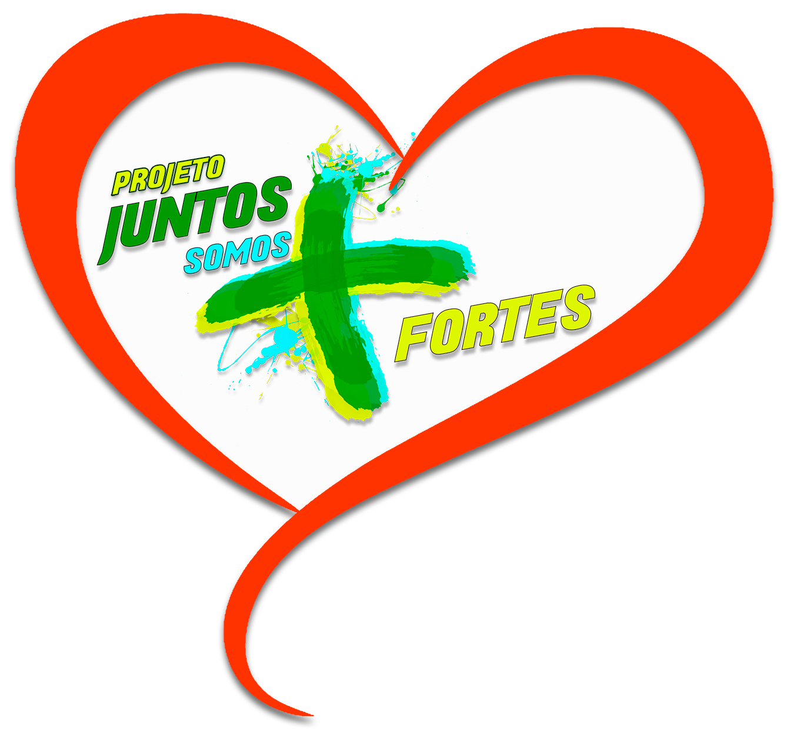
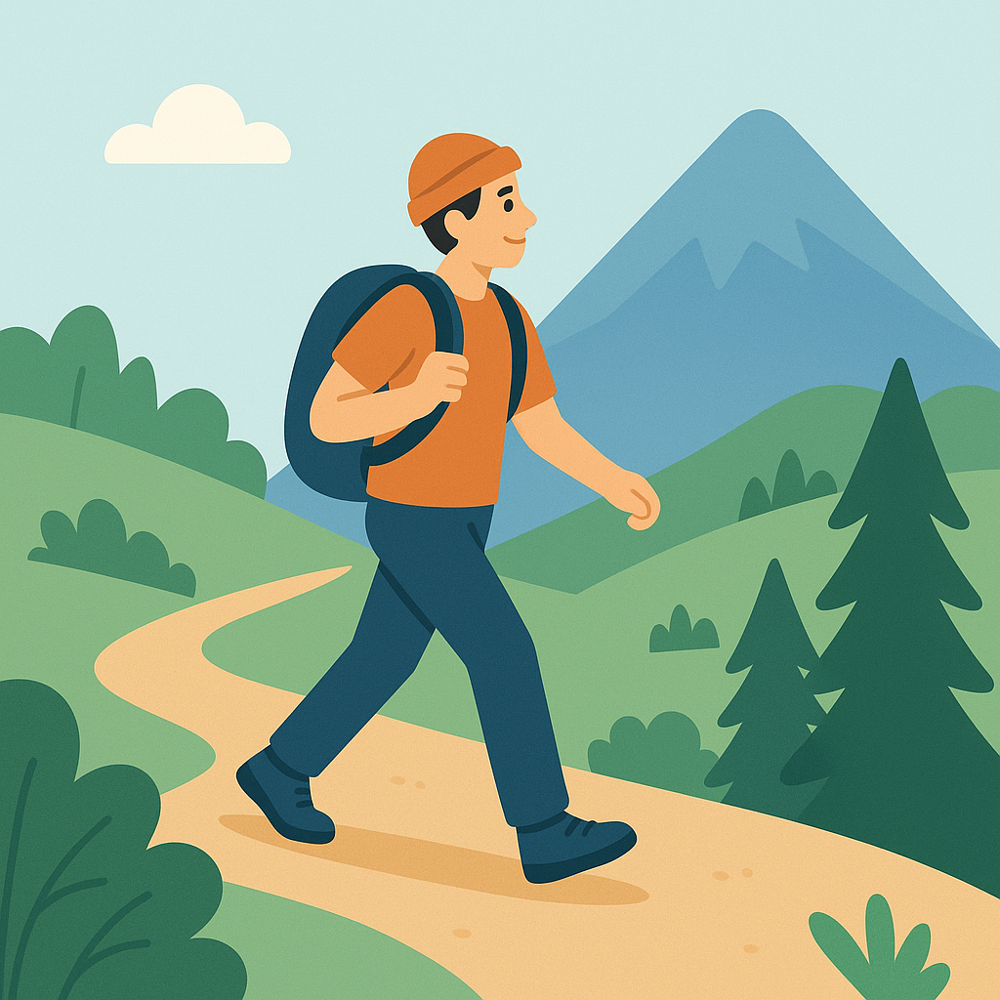
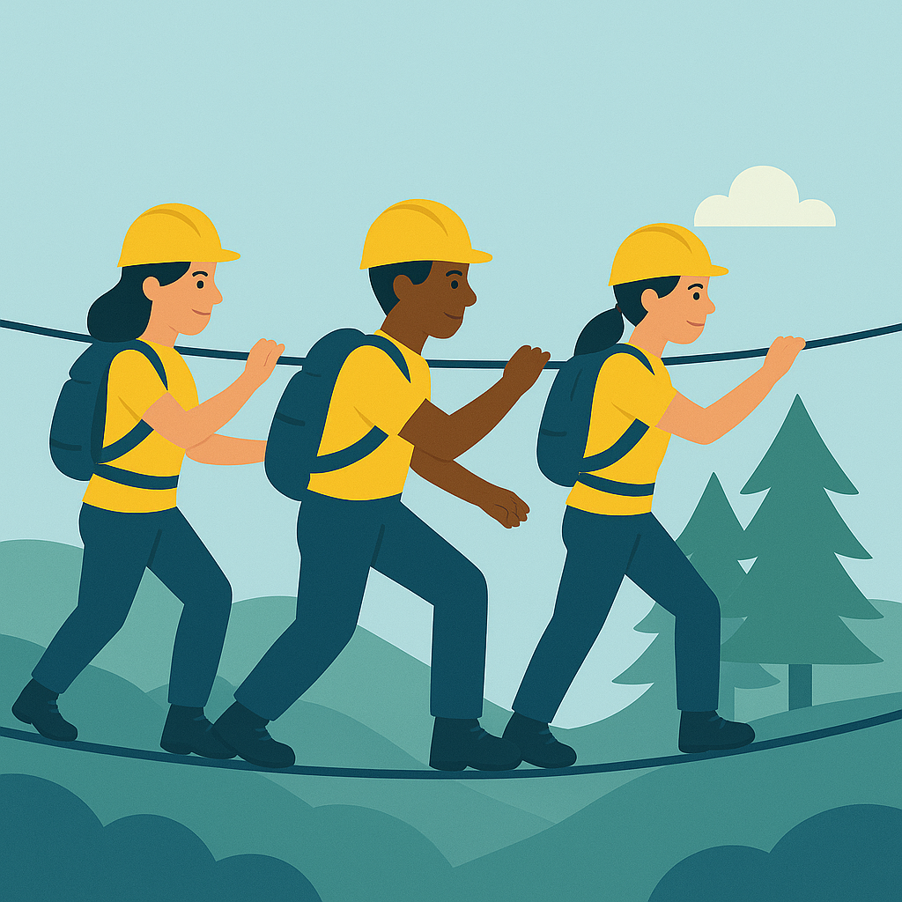

over montain



Desafie seus limites. Viva a aventura.
Nós somos a Over montain uma equipe
especializada em rapel e trilhas, apaixonada por natureza e adrenalina.
Levamos você
aos cenários mais deslumbrantes e às alturas mais desafiadoras com segurança, técnica e espírito de
superação.
Aqui, cada passo é conquista e cada descida é liberdade.
Sinta a adrenalina. Sinta-se vivo.
-

Rapel
-

Trilhas
-

Trabalhos em Altura
-

Eventos Empresáriais